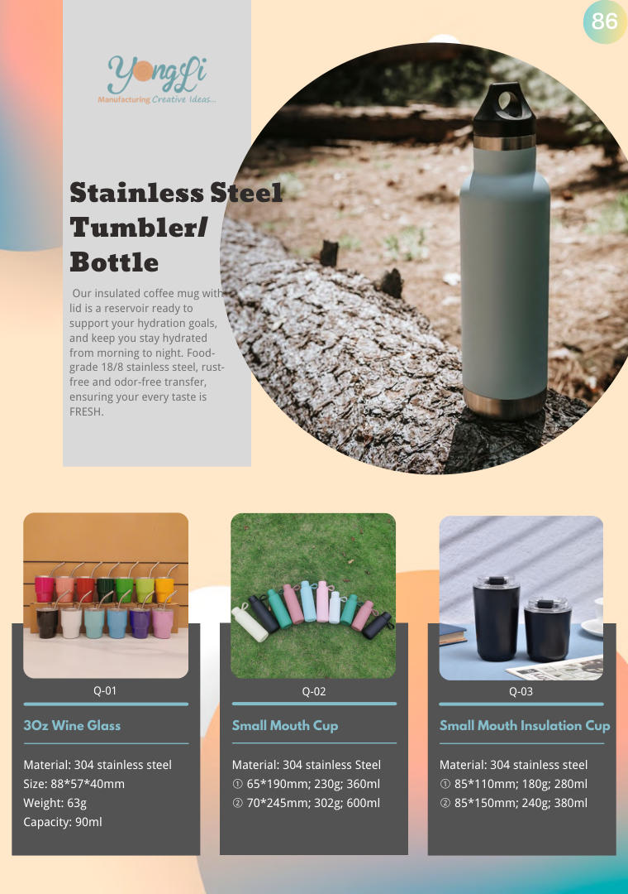
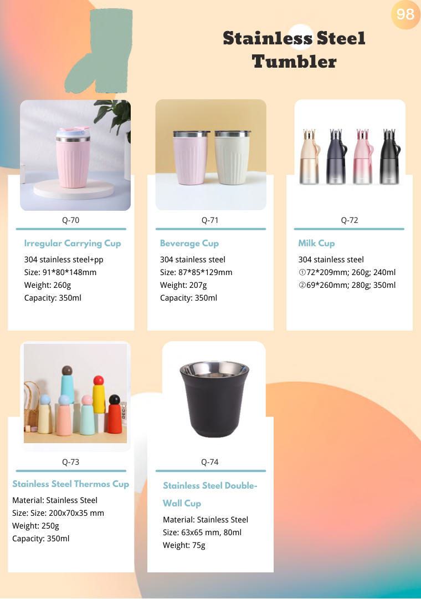

Stainless Steel Tumbler — Kitchen Gadgets
Stainless Steel Tumbler wholesale from Yongli — BSCI & ISO 9001 certified OEM/ODM manufacturer of silicone and stainless steel kitchenware since 2010. Full range of 13 catalog pages, custom OEM/ODM welcome.


About This Range
- Range: 13 catalog pages starting at PDF page 86
- Materials: Food-grade silicone, stainless steel, BPA-free plastic
- OEM & ODM: custom mold design, Pantone color matching, custom packaging and logo printing
- Exported to 34 countries across Europe, America, Middle East and beyond
- In-house R&D, tooling and mass production since 2010
Quality & Compliance
BSCI & ISO 9001 certified OEM/ODM manufacturer since 2010. Serving customers in 34 countries with one-stop OEM, packaging, design and logistics. Vision: Make Globe Trade Easy.
Products in this range
Product names and codes exactly as printed in the catalogue. Click a page number to jump straight to that page.
| Code | Product | Page |
|---|---|---|
| Q-01 | 3Oz Wine Glass | p.86 → |
| Q-02 | Small Mouth Cup | p.86 → |
| Q-03 | Small Mouth Insulation Cup | p.86 → |
| Q-06 | 3Oz Tumbler With Handle 304 inner and 201 outer | p.87 → |
| Q-04 | Small Mouth Bottle 304 inner and 201 outer | p.87 → |
| Q-05 | 3Oz Tumbler 304 inner and 201 outer | p.87 → |
| Q-09 | Insulation Cup 304 inner and 201 outer | p.87 → |
| Q-07 | Straight Suction Cup 304 inner and 201 outer | p.87 → |
| Q-08 | 40Oz Tumbler 304 inner and 201 outer Lid: PP+PET | p.87 → |
| Q-12 | Beer Cup 304 inner and 201 outer | p.88 → |
| Q-10 | Handle Straw Kettle 304 stainless steel+pp+pet | p.88 → |
| Q-11 | Portable Straw Cup 304 inner and 201 outer | p.88 → |
| Q-15 | Insulation Cup 304 stainless steel | p.88 → |
| Q-13 | Eggshell Insulation Cup 304 stainless steel | p.88 → |
| Q-14 | 6OZ Egg Shape Cup 304 stainless steel | p.88 → |
| Q-17 | Insulation Cup 304 inner and 201 outer | p.89 → |
| Q-18 | Bottle Thermos 304 inner and 201 outer | p.89 → |
| Q-16 | Vacuum Milk Bottle 304 stainless steel+pp+pet | p.89 → |
| Q-20 | Coffee Cup With Handle 304 inner and 201 outer | p.89 → |
| Q-21 | Straight Cup 304 inner and 201 outer | p.89 → |
| Q-19 | Insulated Cup 304 inner and 201 outer | p.89 → |
| Q-24 | Insulated Cup Stainless steel 316+pp | p.90 → |
| Q-22 | Portable Insulated Cup 304 inner and 201 outer | p.90 → |
| Q-23 | Insulation Cup 304 inner and 201 outer | p.90 → |
| Q-27 | 20Oz Beer Cup stainless steel 304 + AS | p.90 → |
| Q-25 | Straight Air Insulated Cup 304 stainless steel | p.90 → |
| Q-26 | Coffee Cup 304 stainless steel | p.90 → |
| Q-30 | 20Oz Car Cup 304 inner and 201 outer | p.91 → |
| Q-28 | Madai Cup 304 inner and 201 outer | p.91 → |
| Q-29 | Handle Cup 304 stainless steel | p.91 → |
| Q-33 | Coffee Cup 304 stainless steel | p.91 → |
| Q-31 | Insulated Kettle stainless steel 304 + AS | p.91 → |
| Q-32 | Cold Insulation Tank 304 inner and 201 outer | p.91 → |
| Q-36 | Milk Pipette Cup 304 inner and 201 outer | p.92 → |
| Q-34 | Stainless Steel Cup 304 inner and 201 outer | p.92 → |
| Q-35 | Beer Cup 304 inner and 201 outer | p.92 → |
| Q-39 | Insulation Cup 304 inner and 201 outer | p.92 → |
| Q-37 | 4Oz Mini Coffee Cup 304 stainless steel | p.92 → |
| Q-38 | 4Oz Beer Cup 304 stainless steel | p.92 → |
| Q-42 | Coffee Cup With Handle 304 inner and 201 outer | p.93 → |
| Q-40 | Ice Cup 304 stainless steel+silicone | p.93 → |
| Q-41 | Beer Cup 304 inner and 201 outer | p.93 → |
| Q-45 | Belly Cup 304 stainless steel+pp | p.93 → |
| Q-43 | 20Oz Car Cup With Straw 304 stainless steel | p.93 → |
| Q-44 | Sports Kettle With Handle 304 inner and 201 outer | p.93 → |
| Q-48 | Fat Ding Insulation Cup 304 inner and 201 outer | p.94 → |
| Q-46 | Water Bottle 304 inner and 201 outer | p.94 → |
| Q-47 | Stewing Pot 304 inner and 201 outer | p.94 → |
| Q-51 | Vacuum Coffee Cup 304 inner and 201 outer | p.94 → |
| Q-49 | Insulation Cup 304 inner and 201 outer | p.94 → |
| Q-50 | Diamond Shaped Cup 304 stainless steel | p.94 → |
| Q-54 | Milk Cup 304 inner and 201 outer | p.95 → |
| Q-52 | Cap Cup 316 stainless steel | p.95 → |
| Q-53 | Mini Braised Beaker 304 stainless steel+pp | p.95 → |
| Q-57 | Insulation Cup 304 stainless steel+pp+silicone | p.95 → |
| Q-55 | Insulation Cup 304 stainless steel | p.95 → |
| Q-56 | Rabbit Water Cup 201 stainless steel | p.95 → |
| Q-60 | Insulation Cup 316 stainless steel+pp+silicone | p.96 → |
| Q-58 | Insulation Cup 316 stainless steel+pp+silicone | p.96 → |
| Q-59 | Insulated Kettle 316 stainless steel+pp+silicone | p.96 → |
| Q-63 | Insulated Cup For Tea 304 stainless steel+pp+silicone | p.96 → |
| Q-61 | Kids Straw Insulation Cup 316 stainless steel+pp+silicone | p.96 → |
| Q-62 | Suction Cup With Handle 316 stainless steel+pp+silicone | p.96 → |
| Q-66 | Insulation Cup 304 stainless steel | p.97 → |
| Q-64 | Cap Cup 316 stainless steel+pp+silicone | p.97 → |
| Q-65 | Ice Cream Cup 304 stainless steel | p.97 → |
| Q-69 | Ceramic Coated Straw Cup 304 stainless steel +ceramic spray coating | p.97 → |
| Q-67 | Insulation Cup 304 stainless steel+pp+silicone | p.97 → |
| Q-68 | Insulation Cup 304 inner and 201 outer | p.97 → |
| Q-72 | Milk Cup 304 stainless steel | p.98 → |
| Q-70 | Irregular Carrying Cup 304 stainless steel+pp | p.98 → |
| Q-71 | Beverage Cup 304 stainless steel | p.98 → |
| Q-73 | Stainless Steel Thermos Cup | p.98 → |
| Q-74 | Stainless Steel Double- Wall Cup | p.98 → |
Range Highlights
Stainless steel tumblers built for hot coffee and cold drinks, with finishes and capacities that fit caf?, office and outdoor programs.
- Food-grade stainless steel construction
- Double-wall options keep drinks at temperature longer
- Lids and straws available to complete the set
- Laser engraving and custom color coating offered
Sourcing Note
Tumblers are a staple of corporate and retail branding programs. Share your target capacity and branding method and we will quote from stock or custom tooling.
Every range in Kitchen Gadgets
Sections in printed order - each page lists the products and codes for that range.